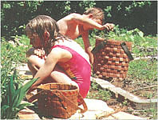
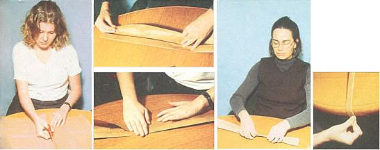
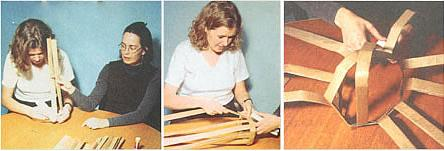
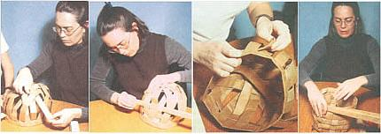
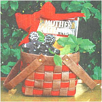

Paper Power: Make A Basket From Paper Strips
A folk art paper basket anyone can make.
By Margaret Crawford
April/May 1998
A good basket may be one of the most utilitarian and universal containers in human history. From cradling babies to Sunday picnics, these simple, handy containers have been a part of almost every culture. They are, perhaps, one of the most enduring forms of folk art. Basketmaking is still practiced today much as in ancient times; the patterns and weaves have changed little over the years. Only the materials used to make the baskets has changed. In the past, if you lived near a creek or river, your baskets might have been made of willow or reeds. Near the mountains, pine needles might have been your choice. A city girl might have used scraps of cloth to make her baskets. Whatever materials our ancestors chose, their baskets were more than art: they were meant to be used. Yesterday, as today, baskets represent the heart and soul of folk art. A need is met-with both an intimate understanding of the environment and the desire for a thing of simple beauty.
Although basketry is still popular, most of us don't have ready access to willows or strong vines - without getting arrested! Sure, we could go to the craft store and buy them. But somehow, that's not as satisfying as gathering our own materials. It all comes back to the folk art idea. Something as personal and basic as a basket should reflect our environment. It should speak of our culture and tell future generations who we were.
And who we are is right in front of you, or rather it's in your hands. It's paper - magazines, newspapers, boxes, and bags - we're drowning in the stuff, and it's not going away. Paper is the single largest product of our culture. It's cheap, it's plentiful, and it's durable. Forty-year-old newspapers have been unearthed in landfills, neatly folded and ready to read. Paper is the willow and reeds of our culture. Let's stop fighting it and start using it.
A good first project to demonstrate the power of paper is a garden basket. Garden baskets are handsome, easy to make and decorate, and chances are you have everything you need on hand. Although made of brown paper grocery bags, they are extremely durable and can withstand being soaked and muddied over and over. I've discovered through experience that these baskets will withstand at least one full summer of rain and mud and, I'm ashamed to admit, one full winter of ice and snow. Just wash them off, reshape them a bit, and set them on a flat surface to dry. In fact, I'll venture to guess these baskets will outlive us all to be haggled over by yuppies at a farm sale. Here's what you'll need:
- scissors
- white
- glue
- brown paper grocery bags
- brass brads or buttons
- thread stapler
- assorted scraps of ribbon, paints, stamps, raffia for decoration
For the smaller basket, you will need six paper bags.
First, carefully open the grocery bags at the seams. It is easiest to open the bottom first, then the back seam. The open bag will look like this figure. Cut off the ragged edge lengthwise along the fold line.
Using medium heat, iron the bags flat. Don't try to iron out all the fold lines; you are only trying to flatten the bags a bit.
To make the 11 ribs, cut three of the bags into four equal pieces each (fig. 2, see Image Gallery). Don't worry if they don't come out exactly equal. Place one piece of paper on the work surface in front of you, with any unwanted words or artwork face up. Fold in half lengthwise and crease. Open back up and fold one long edge to the center crease-line and crease. Turn the paper around and repeat this step with the opposite edge. Now fold the two edges together with the folded parts inward and run this strap along a sharp edge, such as a counter top or table edge, to hold it together. Repeat with ten more pieces.
For the four weavers plus the rim, cut the other three bags as follows. Cut on the second fold line from one end of the bag. Save the small piece for a future project. These extra pieces also make great drawing paper for the kids.
Now, fold the long piece in half lengthwise and cut on the fold. You now have two long pieces. Fold these pieces as you did before when making the ribs.
Take one of the long straps and form a circle (the rim), tucking one end into the other about half an inch. Holding this circle in place, take one of the shorter straps (ribs) and tuck one end perpendicularly into the rim where you put the ends together. Staple the three ends together. Leave the other end hanging free.
Staple in ten more ribs, spaced about an eighth of an inch apart, for a total of eleven ribs. Now, including the last rib stapled, count back six ribs, and bring that rib's free end across and next to the first rib stapled and staple it into the rim about an eighth of an inch from the first rib. Repeat with the fifth from last, then the fourth from last, and so on, bringing each end across and next to the last one stapled.
Now taking each free end of the five remaining ribs, weave them alternately through the six ribs at the bottom of the basket, bringing them up and across and stapling them into the rim, forming a checkerboard pattern. Since some straps may not fold exactly, you may or may not have extra space in the rim after all the ribs are secure. You may need to remove some of the staples to adjust your spacing. After you have made a few baskets you will develop a feel for how much to space the ribs. Also keep in mind that the spacing doesn't have to be exact, since folk-art is seldom exact. Now add an extra staple to each rib around for extra strength. Before you start to weave the sides, you can straighten up the bottom.
There will be four weavers forming the sides. The sides of these baskets are woven from the top down. To maintain the basket-weave pattern you started on the bottom, simply pick any rib and count up "in, out, in, out" to know how to position the first weaver.
With the open edge of the weaver pointed down, use a standard in-out-in-out weave to weave the straps around through the ribs. Tuck the ends one into the other as you did for the rim, and glue them in place. Slide the strap around so the joining spot is hidden behind a rib. The last one might be a little difficult, but it will go in. The tightness of this basket is what makes it so handsome and durable.
If your basket is not quite as straight as you would like, keep in mind that more shaping can be done when you stain it.
Now, take the remaining long strap and glue it over the stapled rim to hide the staples. For a simple handle, make two straps any length you want and glue them shut along their entire lengths. Next, with a nail and hammer or a punch of some kind, make hole on each side of the basket in the rim where you want the handle to go. Also, make a hole in each end of the handle, about an inch from the end. Match up the rim holes with the handle and connect with brass brads, which are available in the stationary section of your department store. Another cute way to attach the handles is to line up the holes and sew buttons on either side to hold rim and handle-end together.
To stain the basket, dilute three or four parts water to one part acrylic paint. Brush or sponge on. After staining, and while the basket is still wet, you can push and shape it a bit and flatten the bottom if you wish. Dry it on a piece of wax paper so it won't stick. Burnt sienna and burnt umber give the baskets a warm color, while white gives it a whitewashed country look.
You might want to try several colors on a scrap piece of paper and allow them to dry to see what colors you like. You can also stain the ribs and weavers before you make the baskets for a two-toned look. A final coat of water-based varnish will give your basket a rich glow, but it isn't absolutely necessary.
The large basket, because of its size, can be a bit awkward to make, but is well worth the time. It uses twelve paper bags. The fifteen ribs are the size of the smaller basket weavers. The six weavers and the rim will use the full length of the paper bag, which you cut in half lengthwise to make two weavers per bag. To start the weaving on the bottom, count back eight.
There are many ways to decorate these baskets. I like to use rubber stamps since they come in about any design you could want. A cute party basket has balloons painted all around. Just paint a blob roughly the shape of an egg. When dry, add a white swipe when to the upper left portion of the balloon to create a reflection. Then add a squiggly line for a string and you have a party! In fact, I like to keep a few extra baskets on hand since they make perfect gifts. Just tuck some homebaked cookies or other goodies inside, add a bow, and you are ready to go. If you are painting-impaired as I am, there are several clever ways to get around this step and still have a well-decorated basket.
First, the easiest thing to do is to tuck things into the weavers all around, like lollipops for a party-girl basket. Plastic forks or spoons spray-painted a fun color would complete a picnic basket. Or try weaving strips of wrapping paper or ribbon around the basket. This gives the illusion of paint without painting.
However you use your baskets, I can almost guarantee that once you start making them, you'll never seem to have enough on hand, and you'll never ask for "plastic" again.
When browsing through those slick decorating magazines, one thing you see over and over are these little wooden shapes strung on raffia and hanging from just about everything. Bunnies and ducks and hearts everywhere! Well, you don't need to be machine-shop savvy, or even spend a dime. You don't need to look any farther than your children's breakfast. Not the cereal, but the boxes they come in. Simply use a cookie cutter to trace the shapes onto the cardboard, cut out, punch holes with a hole punch, glue three or four together for strength and thickness, and paint. String on a piece of raffia or ribbon, and you have the same look for free. If you have a bit of wire, just wind it around and around a pencil, then slide it off and attach it to the painted shape for a nifty tree decoration. You can layer these and add bits of ribbon and lace or buttons to decorate. If you wish, you may paint on a coat or two of gesso, sanding between coats, before painting.
|
 JAMEY O'QUINN These homemade paper baskets can be made in any size, and decorated however you wish! |
 MOTHER EARTH NEWS STAFF To make 11 ribs, cut three bags into four equal pieces each. |
 JAMEY O'QUINN Mother's editorial intern Jennifer Barros and senior editor Molly Miller put Margaret's basket-making instructions to the test. |
|
 JAMEY O'QUINN Staple 10 ribs around the rim, spaced about an eighth of an inch apart. |
 JAMEY O'QUINN Loop the ribs, then begin weaving your paper straps in and out of the ribbed basket frame. |
 JAMEY O'QUINN The finished product: a useful, beautiful basket! |